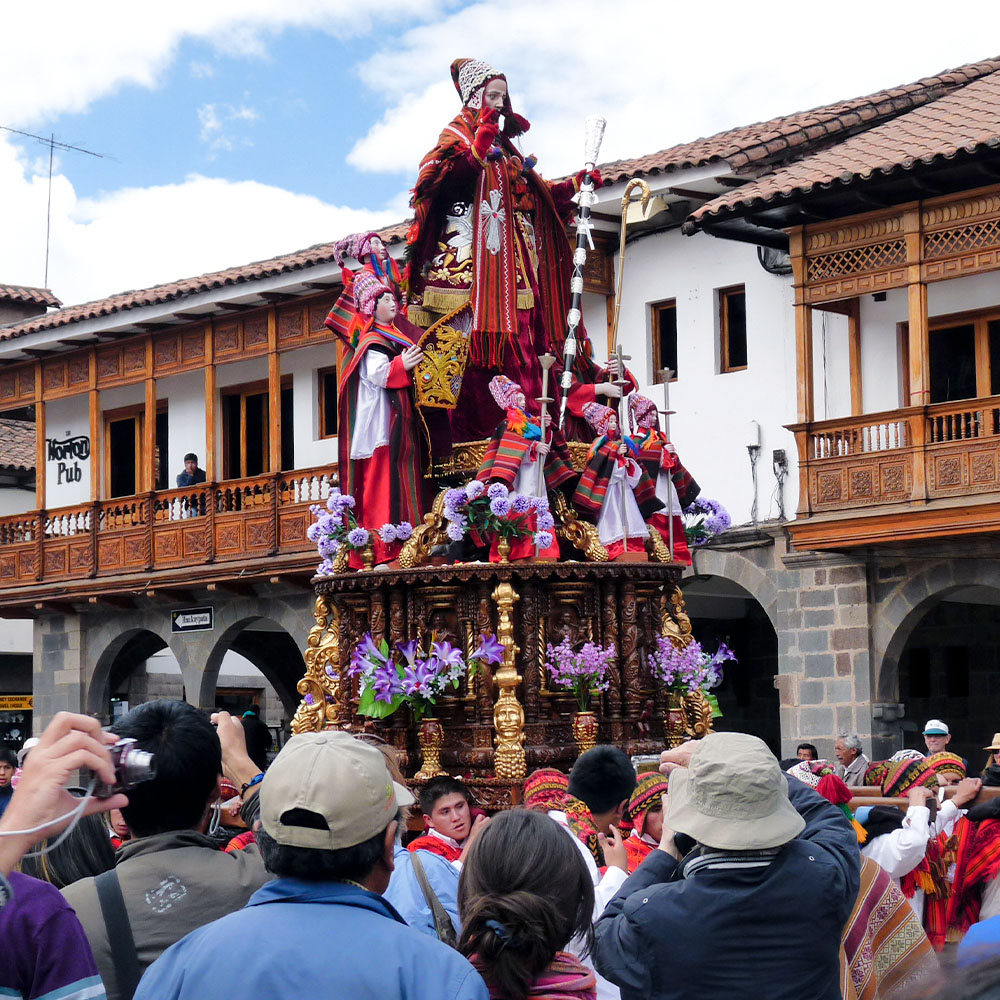
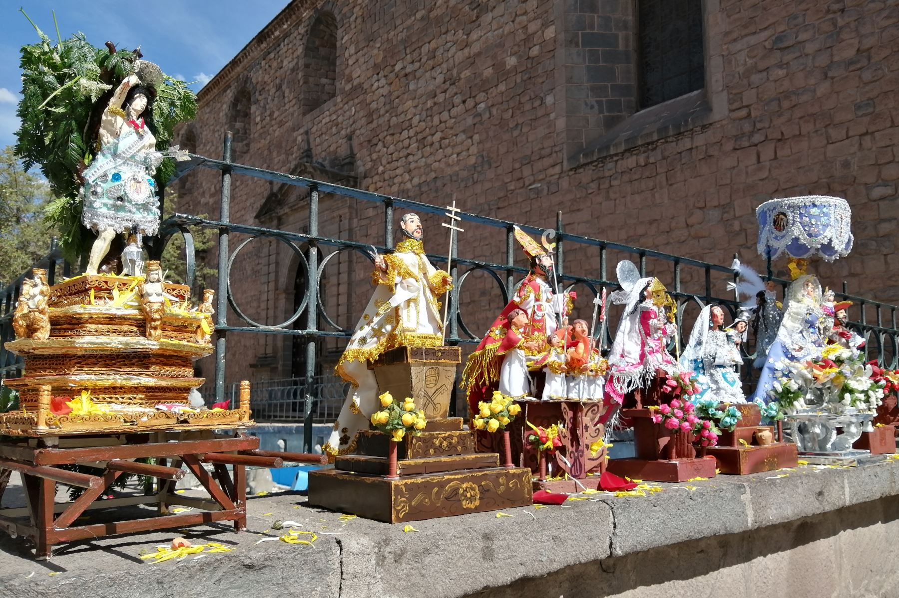
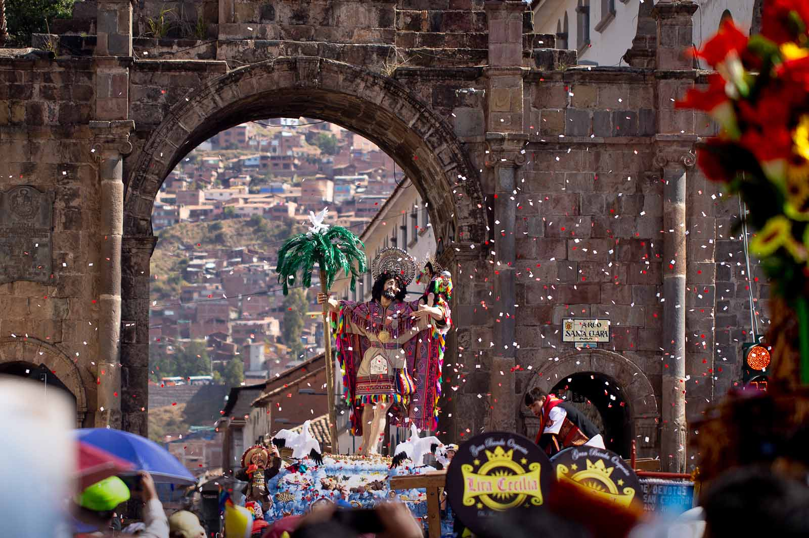

Corpus Christi: La fiesta religiosa más importante del Cusco
El Corpus Christi es una de las celebraciones religiosas más significativas del Cusco. Se celebra 60 días después del Domingo de Resurrección y reúne a las principales imágenes de santos y vírgenes de la ciudad en la Plaza de Armas, en una impresionante procesión llena de devoción y tradición.
Historia
La festividad del Corpus Christi en Cusco tiene sus raíces en la época colonial, cuando los españoles introdujeron esta tradición cristiana. Sin embargo, los incas la adaptaron, integrando su cosmovisión andina. Actualmente, cada parroquia cusqueña lleva su imagen religiosa en procesión hasta la Catedral del Cusco, donde permanecen durante la celebración.




Horarios y Ubicación
- Ubicación: Plaza de Armas de Cusco y Catedral del Cusco.
- Fecha de celebración: 60 días después del Domingo de Resurrección.
- Costo de entrada: La participación en la procesión es gratuita, pero el ingreso a la Catedral puede requerir una entrada.
Consejos para Visitantes
- Llega temprano: La Plaza de Armas se llena rápidamente de feligreses y turistas.
- Usa ropa cómoda y abrigadora: Las temperaturas en Cusco pueden cambiar durante el día.
- Prueba el chiriuchu: Este plato típico se prepara especialmente para la festividad y es una delicia que no puedes perderte.
- Respeta las tradiciones: Es una celebración religiosa, por lo que se recomienda mantener una actitud respetuosa.
- Captura el momento: La procesión y la decoración de la ciudad hacen de este evento un espectáculo visual único.